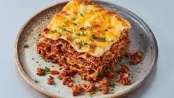

Making lasagna can be time-consuming, but the results are well worth the wait.
You'll find a detailed ingredient list and step-by-step instructions in the recipe below, but let's go over the basics
Gather all your ingredients.
Cook sausage, ground beef, onion, and garlic in a Dutch oven over medium heat until well browned.